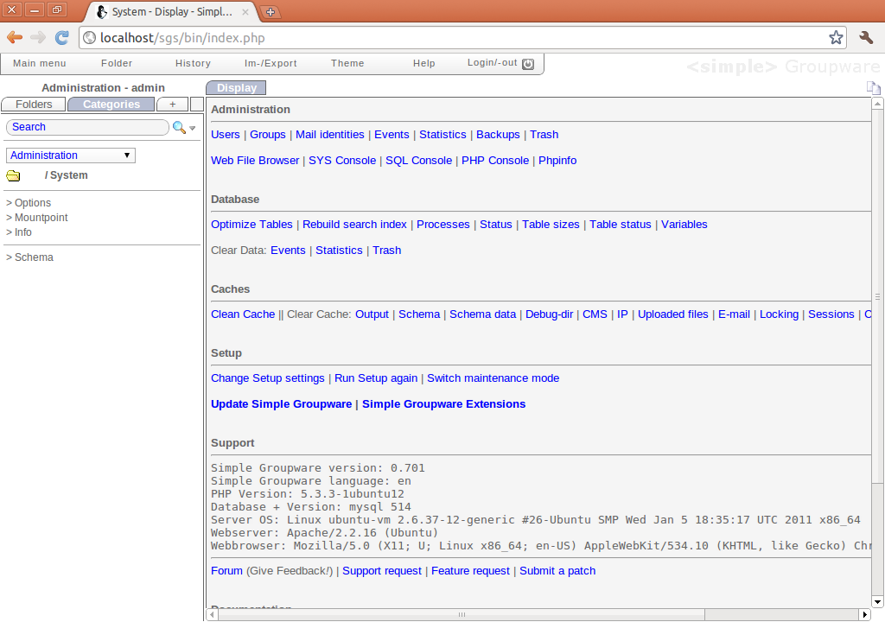

簡單易用、人如其名的群組軟體 - Simple Groupware & CMS

- 官方網站：https://www.simple-groupware.de/cms/
- 安裝程式下載網址：https://nchc.dl.sourceforge.net/project/simplgroup/simplegroupware%20installer/0.6/sgs_installer.php.gz (7.4KB)
- 完整套件下載網址：https://nchc.dl.sourceforge.net/project/simplgroup/simplegroupware/0.701/SimpleGroupware_0.701.tar.gz (5.4MB)
簡介
網路時代的來臨，造成人類生活的重大變遷，也快速影響眾人日常所熟悉的事物。以網站為例，早期最單純、以文字與靜態圖片為主的網頁，如今已經成了稀有動物。現今大多數的網站不但擁有動態內容，也會提供大量的動畫與圖表，以便讓訪客前來造訪網站時，可以取得最豐富的內容。這樣的發展歷程，其實也不過短短數年而已。如今網站系統的蓬勃發展，也推動了許多相關系統的開發，更造就許多新系統的出現。例如許多機關團體都有採用內容管理系統（Content Management System, CMS）的經驗，期望透過內容管理系統所提供的功能，以輔助日常作業經常面臨的資料處理動作。網路上可以找到的內容管理系統數量多如江河之鯽，而且大多數都能提供相當多元化的資料處理功能。不過許多內容管理系統雖然提供了相當多的系統功能，但在操作上也顯得相形複雜，甚至還會因為操作上的不便，而影響一般使用者採用相關系統的信心。
或許內容管理系統便是以功能眾多為其主要特色，因此無可避免地會擁有較多的資料處理功能。但功能較多的情況下，是否代表操作上一定比較複雜，倒也不是定論。只要稍微花點心思，還是能在網路上找到許多採用開放式原始碼、功能眾多，但操作相當簡便與直覺的內容管理系統，例如以簡單為名的 Simple Groupware & CMS。為了行文方便，本文接下來將以 Simple Groupware 稱呼此軟體。
▲Simple Groupware & CMS 的操作畫面。
Simple Groupware 本身是一個企業級的群組軟體，提供了大多數群組軟體所必備的功能，例如電子郵件、行事曆、聯絡人、工作排程、文件管理以及專案管理等等。雖然 Simple Groupware 是以企業級導向所設計的軟體，但本身仍然採用 GPL 授權，並不因為針對的目標客戶群是一般企業，便改用商用軟體的發行方式。而且 Simple Groupware 本身強調所有的功能都是以開放原始碼方式進行釋出，也不提供商業版本。使用 Simple Groupware 並沒有任何限制，不會因為使用的是免費的版本，便限制最大使用者數目，或是可在不同主機進行安裝的套數等各種條件。而更加令人驚奇的是，Simple Groupware 的支援與文件也都可以免費取得，在使用上即使產生問題，也能經由這些輔助資訊取得解答。
Simple Groupware 是以 PHP 撰寫而成，並採用網頁模式的操作介面，本身在操作上相當簡便。Simple Groupware 也整合了許多網路標準，例如 RSS、iCalendar 行事曆、vCard 聯絡人格式，再加上 IMAP、POP3、SMTP、CIFS 等各種不同的通訊協定，幾乎是整合了所有日常作業中所需要使用的網路功能，並合而為一。如果這樣的功能仍然不足以滿足使用者的需求，Simple Groupware 也內建了一套名為 sgsML 的程式語言。只要了解其相關語法，便能快速建立或自定網頁應用程式，並依照個人需求加以設計。
方便使用的安裝程式
一般而言，選用軟體系統之後，一開始多半都要擔心安裝相關的問題。許多網頁系統都使用了自動化的安裝工具，以便將安裝過程的步驟簡化，Simple Groupware 也不例外。大多數的網頁系統，都是將安裝程式內嵌於系統之中，例如在該系統的網頁目錄下額外建立一個取名為 install 的資料夾，進入此目錄即可開始安裝系統。但 Simple Groupware 則是採用安裝程式與系統本體完全獨立的方式進行處理。在安裝 Simple Groupware 之前，使用者只需要先行下載安裝程式即可，其檔案大小只有數 KB 左右。執行該安裝程式後，安裝程式會自動檢查目錄中是否有完整套件的存在。如果完整套件尚未下載，安裝程式會自動從網路下載此完整套件並進行安裝。雖然在安裝時不需要事先下載完整套件，但如果事先完成下載動作，則在安裝時需要耗費的時間會比較少。而有了安裝程式的輔助，讓 Simple Groupware 的安裝過程變得非常容易，也可以減少許多麻煩的系統處理過程。
強大的系統功能
群組軟體或內容管理系統需要提供的功能為何，可能在不同的軟體系統之中有各自的定義。但無論使用的系統為何，一些基本功能都不能被排除在外。Simple Groupware 為了滿足各類型使用者的需求，不但提供群組軟體或內容管理系統的各種基本功能，也一併提供其他軟體較為少見的操作項目。一進入 Simple Groupware 之後，即可從畫面左方得知目前系統所提供的功能項目為何。其中聯絡人管理、行事曆、檔案管理、專案管理等功能是大多數內容管理系統都會提供的功能，其操作方式也與大多數的同類型軟體大同小異。除了這些基本功能以外，使用者也可以從畫面中找到一些額外的進階功能。例如在問卷調查系統之中，可以自行製作線上問卷，以調查眾人對某事物的看法並進行投票。論壇功能可以作為線上討論空間使用，使用者可以自行建立文章並闡述個人看法，其他人也能直接在文章之中與原作者進行互動。會計功能則可以針對支出、成本控管等項目進行管理，盤點功能則可以進行資產的管理工作，並以資產的所屬類別、廠商等屬性進行處理。而在系統管理功能方面，除了基本的使用者、群組等管理功能以外，也提供了系統備份、統計報表以及模組管理等功能，功能之多令人難以想像。
▲Simple Groupware 提供的功能種類相當多，包含常見的一般功能與一些進階功能。
安全與簡便的操作環境
由於 Simple Groupware 是一套完全使用網頁介面作為使用者操作介面的群組系統，因此任何人在使用 Simple Groupware 進行操作時，只需要使用最單純的瀏覽器即可進行操作，不需要使用任何特製的客戶端程式。又因為 Simple Groupware 並沒有使用任何特殊的技術進行系統開發，因此使用者的瀏覽器之中並不需要安裝任何外掛程式。單純化的作業環境，讓使用者不必花費太多心思在其他不必要的軟體套件之中。除了需要的客戶端軟體相當單純以外，Simple Groupware 在使用者介面上也提供了相當簡潔的操作環境。Simple Groupware 大多數的操作項目都十分直覺，從各個操作選項的名稱之中便可得知該項目的大致功能為何。如果對於某個項目的操作方式不太熟悉，也可以利用 Simple Groupware 本身所提供的文件進行查詢，以得知更進一步的操作方式。
▲操作與使用 Simple Groupware 非常直覺，幾乎沒有學習曲線。
在一般環境的使用狀況下，群組軟體之中會包含許多重要資料。這些資料如果都是以明碼方式進行傳輸，在使用上多少有一些風險存在。如果不希望傳輸過程中這些資料被攻擊者從中截取竊聽，可以使用 SSL 的通訊協定加以保護。Simple Groupware 雖然在操作上儘量以方便、簡單為主要設計理念，但也相當注重安全防護方面的各種問題。完整支援 SSL 的 Simple Groupware，可以確保資料在傳輸過程中不至於被他人取得，以保護重要的資料。
模組化的設計方式
Simple Groupware 不但提供相當多元化的系統功能，而且大多數的功能都是採用模組方式進行設計，這意味著 Simple Groupware 可以非常容易地完成系統功能的擴充。只要 Simple Groupware 的開發團隊提供了新的功能支援，即可將此功能模組加入現有的系統之中，並立即擴充系統的功能。而在功能模組啟用之後，如果發現此功能不符合需求，或是會影響到其他功能的正常執行，即可進入管理介面中將此模組加以關閉，直到檢查出問題所在之後再予以開啟即可。由於這種模組化設計的方式在使用上具有相當程度的彈性，因此任何人在使用 Simple Groupware 時，都可以依照個人的喜好或是需求決定 Simple Groupware 的使用方式，或是此系統的功能多寡。
▲模組化的設計可以提供彈性化的功能選擇。
強大的管理功能
除了一般操作上的功能眾多，而且使用相當便利以外，Simple Groupware 的系統管理功能方面，也可以幫助系統管理者在進行管理工作時，可以較為快速且簡便的完成管理工作。在 Simple Groupware 的系統管理畫面裡，可以看到管理功能基本上區分為四大類，分別是系統管理、資料庫管理、快取管理，以及環境設定。每一種管理類別之下都提供了許多不同功能的操作項目可以使用，在使用時可以依照欲進行的工作所屬類別進行查詢，找到相對應的項目之中直接執行該功能即可。以系統管理類別為例，此處提供了使用者與群組的管理功能，也能針對電子郵件身分進行管理。而系統事件功能等於是 Simple Groupware 的記錄檔功能，可以查詢重大事件的發生時間與詳細資訊。而系統的運作統計資訊，以及系統備份、回收桶管理，也都是系統管理類別的一部份功能。Simple Groupware 甚至還在此類別之中提供線上檔案管理功能，系統管理員可以直接使用網頁型態的檔案管理程式，進行 Simple Groupware 目錄下的檔案管理工作，例如複製、刪除等各種檔案存取功能。

▲管理畫面中提供了相當強大的管理相關功能，可以調整系統環境至最合適的程度。
資料庫管理分類之中，可以找到一些與資料庫相關的管理工具。例如資料表格的最佳化、重新建立搜尋索引等功能。此外，也可以檢查目前資料庫的行程執行狀態與相關資訊，或是查詢資料庫的運作現況、資料表格的大小，以及資料表格的使用情況等各種資料庫相關的數據。如果想要清除系統的統計資訊、事件資訊，或是回收桶之中的資料，也可以在資料庫管理分類中進行處理。
快取管理可以針對 Simple Groupware 所提供的快取空間進行管理，在使用者上傳檔案或是進行發送郵件等動作之後，都會在快取空間之中留下一些相關資訊。如果要清除或是查詢快取空間的相關訊息，即可在此處進行相關動作。而環境設定分類之中，可以設定整個 Simple Groupware 的工作環境。例如需要修改 Simple Groupware 所建立網站的標題，或是打算變更資料庫的存取帳號與資料庫名稱等系統設定，都可以在設定畫面中找到相對應的選項，或者可以重新執行設定程式，將整個系統恢復成預設狀態並重新進行初始化設定。如果系統要進行長時間的維護工作，則可以在此處將 Simple Groupware 切換成維護模式，此時便只有系統管理員可以進行相關的管理作業，其他使用者將無法登入系統。如果 Simple Groupware 推出更新版本，也可以直接在此處進行升級動作，不需要手動下載更新檔案並進行相關的處理動作。
結語
在各式各樣的網站系統之中，內容管理系統與群組軟體一直是相當熱門的應用方式之一，網路上也能找到相當多的類似軟體。由於每個機關團體的需求各有不同，無法直接論定某種系統一定是最佳選擇，因此在選擇此類型的網站系統時，常常會面臨不知道該如何進行選擇的問題。從功能上來看，Simple Groupware 的操作雖然簡便，但本身所提供的功能毫不含糊，應該可以應付大多數人的使用需求。如果真要說這套系統有些什麼問題，那就是支援的多國語系當中只有簡體中文，而沒有國人所慣用的正體中文語系。不過這樣的問題只要透過自行修改語系檔案即可解決，並不是太過嚴重的問題。
作者簡介
翁卓立逢甲大學資訊工程學系、台灣科技大學電子所畢業，目前擔任韌體研發工作，主要使用 Embedded Linux 進行產品開發。著有「Linux 進化特區：Ubuntu 10.04 從入門到精通」等書。